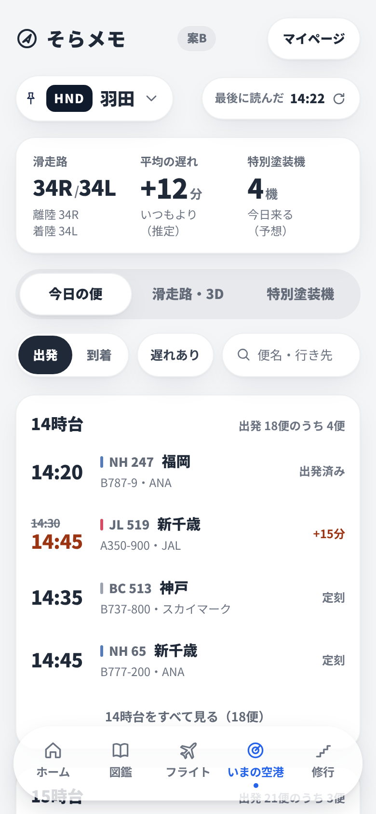
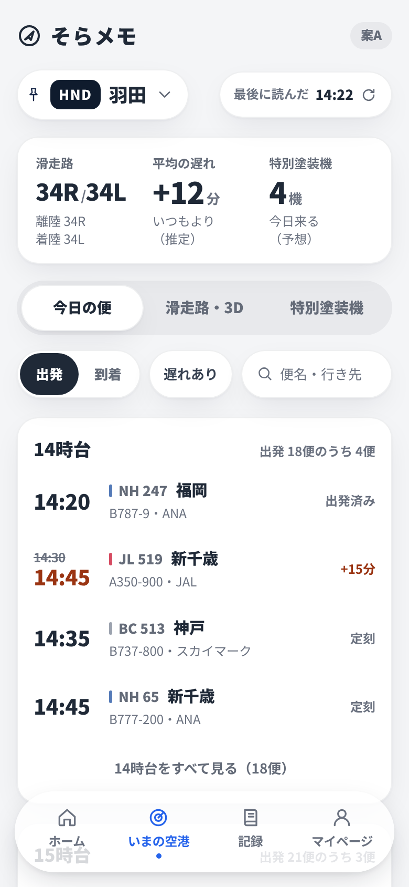
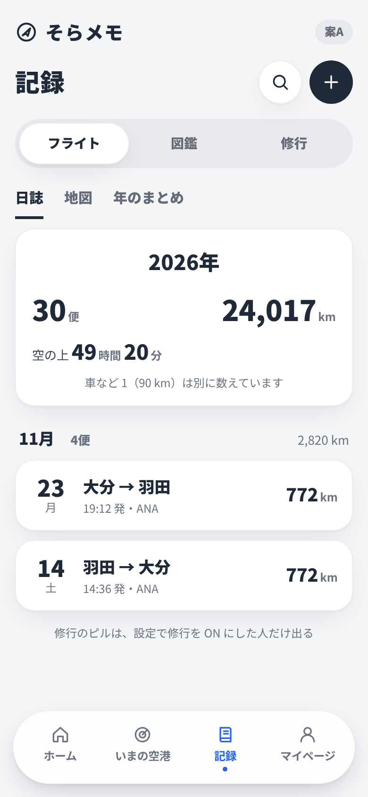
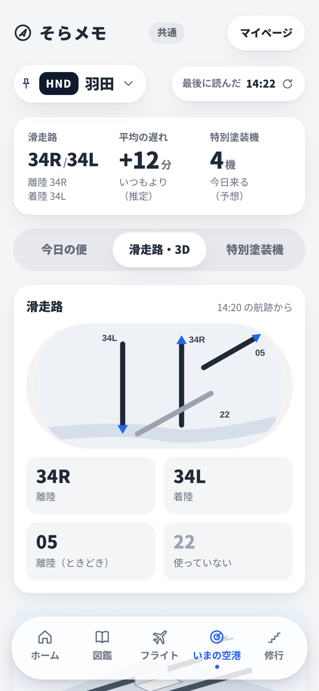
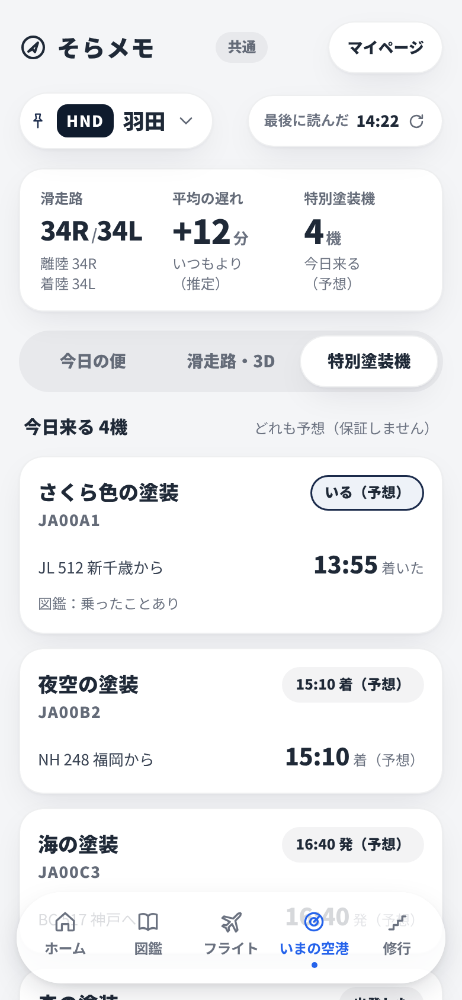
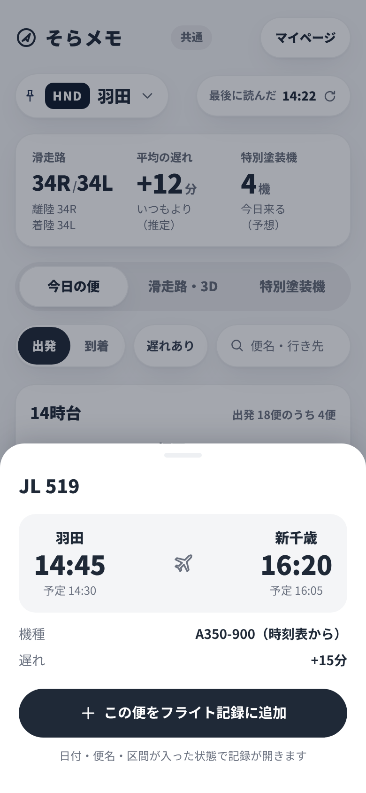
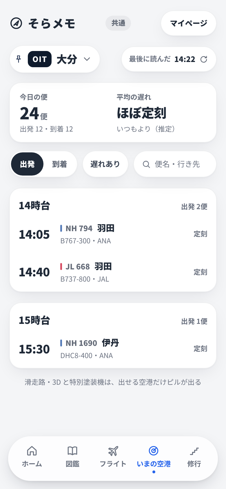
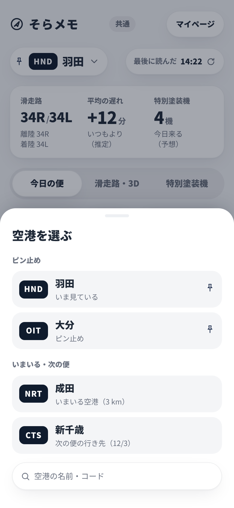

画面案 1版（11/25）。2案を並べて比べる。押すと 390 幅の HTML が開く。アプリには入れない



下のタブだけ違う。ここでは案B のタブで描いた





「図鑑に記録」ボタン（図鑑は乗った・見た記録からだけ）／搭乗口（規約を確かめ中）／天気の印／運用を集めるバッジ／案内板風を全体に。特別塗装機の名前と登録記号は見本
390 と 375 で：12px 未満の字 0・44px 未満のボタン 0・横のはみ出し 0